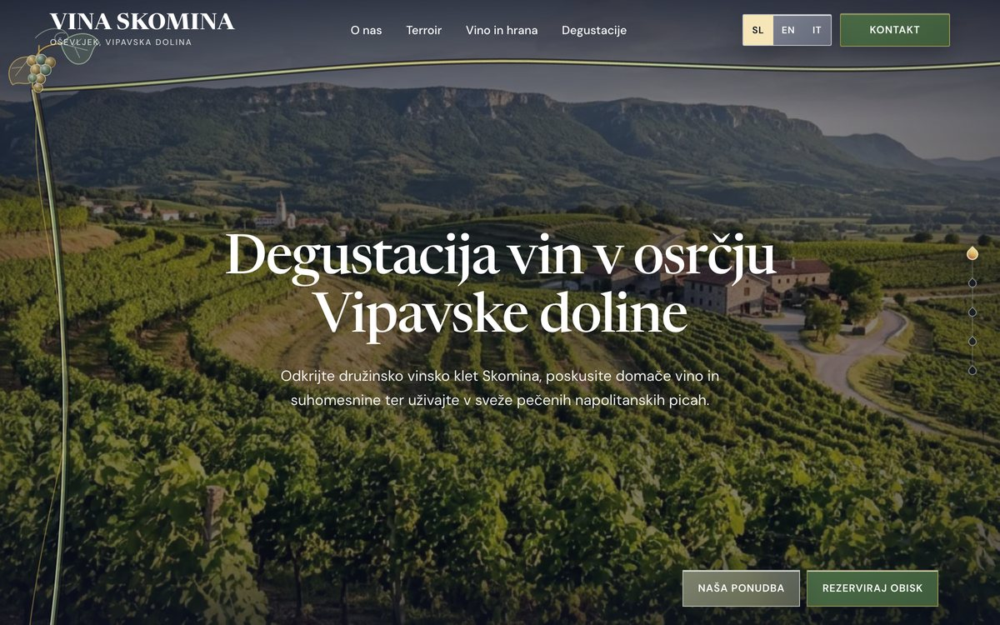

Vinarstvo
vina.skomina.si
Vina Skomina
- HTML5 / CSS3
- Vanilla JS
- Leaflet
- SVG animacije
- SL / EN / IT
- Schema.org
- Izziv
- Trojezična predstavitev vin in degustacij s prikazom vinogradov brez počasnih predlog.
- Rešitev
- Statična stran s hreflang jeziki, animirano SVG trto, zemljevidom Leaflet in rezervacijami.
- Rezultat
- Takojšnje nalaganje z WebP slikami in neposredna oddaja povpraševanj brez strežnika.